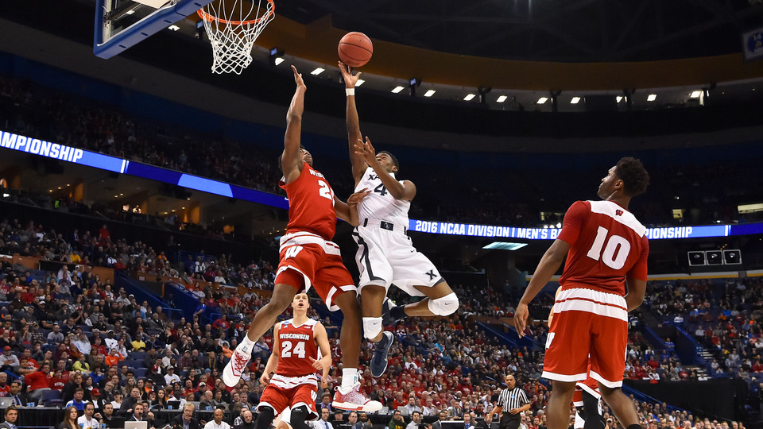
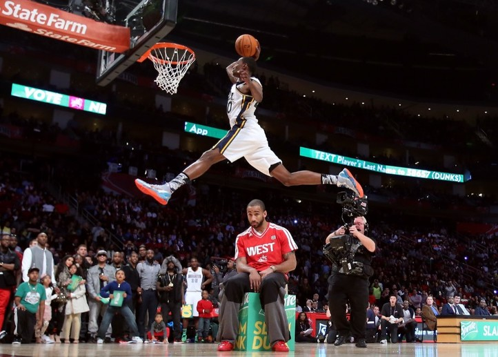

Left
Pengenalan Basket
Middle
Bola basket adalah olahraga bola berkelompok yang terdiri atas dua tim beranggotakan masing-masing lima orang yang saling bertanding mencetak poin dengan memasukkan bola ke dalam keranjang lawan. Bola basket dapat di lapangan terbuka, walaupun pertandingan profesional pada umumnya dilakukan di ruang tertutup. Lapangan pertandingan yang diperlukan juga relatif tidak besar, misal dibandingkan dengan sepak bola. Selain itu, permainan bola basket juga lebih kompetitif karena tempo permainan cenderung lebih cepat jika dibandingkan dengan olahraga bola yang lain, seperti voli dan sepak bola.

Bola basket adalah salah satu olahraga yang paling digemari oleh penduduk Amerika Serikat dan penduduk di belahan bumi lainnya, antara lain di Amerika Selatan, Eropa Selatan, Lithuania, dan juga di Indonesia. Banyak kompetisi bola basket yang diselenggarakan setiap tahun, seperti British Basketball League (BBL) di Inggris, National Basketball Association (NBA) di Amerika, dan Indonesia Basketball League (IBL) di Indonesia.

Right
Basket dianggap sebagai olahraga unik karena diciptakan secara tidak sengaja oleh seorang guru olahraga.
Artikel basket Lain